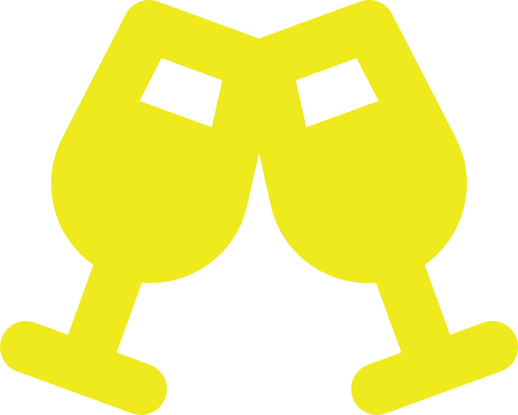

Ubicado en una de las zonas más privilegiadas, nuestro residencial combina lo mejor de la naturaleza con el toque del hogar, creando un ambiente acogedor para todos.
Traslado con el servicio de taxis amigos
nos preocupamos por tu comodidad en todos los aspectos, y sabemos lo importante que es contar con un servicio de transporte confiable. Por eso, hemos establecido una colaboración con Taxis Amigos, un servicio de transporte que ofrece traslados rápidos, seguros y cómodos para nuestros residentes.
Bienvenida
En Residencial Lo de Pepe, creemos en la importancia de la convivencia y la comunidad, por eso, además de contar con habitaciones privadas, tenemos habilitada una cocina compartida en el piso superior para que puedas preparar tus comidas de manera cómoda y práctica. La cocina compartida es el lugar ideal para convivir con los demás residentes, compartir recetas, o simplemente disfrutar de un momento agradable mientras cocinas.

¡Pasa Año Nuevo en Residencial Lo de Pepe!
Celebra la llegada del nuevo año con nosotros en un ambiente único y lleno de alegría.
Contamos con un divertido karaoke, donde todos pueden mostrar su talento.
En Residencial Lo de Pepe, nos gusta que cada celebración sea un momento para fortalecer los lazos de amistad entre los pasajeros y que todos tengan una experiencia inolvidable.